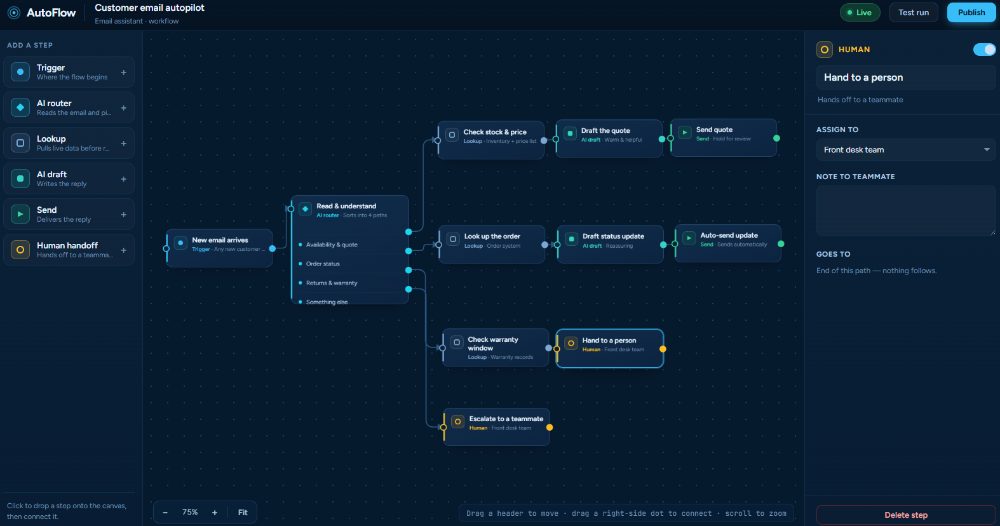

AI business automation
In developmentOne system
for your whole
workflow.
MCFlow is an AI-enabled workflow editor and CRM that connects customer information, everyday tools and repeatable business processes in one flexible system — so the same result happens every time, without someone remembering every step.
MCFlow is currently in active development. If you're interested in early access or want to shape what it becomes, get in touch.

Concept illustration — MCFlow is in development
The vision
Less repetition.
More consistency.
Most businesses have processes that are run differently every time, by whoever happens to remember them. MCFlow makes them reliable and repeatable — with AI handling the judgement-light steps.
Editorial illustration — not a product screenshot
"The same result, every time, without someone remembering each step."
Most businesses run their best processes only when the right person is available. When they're not, things slip. MCFlow captures those processes — the intake routine, the follow-up sequence, the end-of-week close — and runs them reliably, with AI stepping in where appropriate and a person staying in control of anything that matters.
It's not a generic automation platform. It's built around the reality of how small businesses actually work, with CRM records and workflow steps living together in one place.
Planned features
What MCFlow
will do.
These are the core capabilities being designed and built. Final feature set may evolve based on real-world feedback.
Visual workflow editor
Build repeatable business processes as clear visual flows — drag-and-drop steps, conditional branches, and trigger events, without writing code.
AI-assisted steps
Let AI handle the judgement-light work — triaging and drafting responses, classifying enquiries, summarising notes — while keeping humans in control of what matters.
Integrated CRM
Customer information, interaction history and workflow state all live together — no switching between a CRM and a separate automation tool.
Tool connections
Connect the everyday tools your business already uses — email, calendars, forms, spreadsheets — so workflows can trigger actions across them automatically.
Process templates
Start from a template for common business processes — client intake, appointment follow-up, invoice reminders — and adjust to fit your exact situation.
Visibility and audit trail
See exactly what's running, what's paused, and what a workflow did at each step. A complete history for compliance and for debugging when something needs attention.

Under the hood
Built on solid
foundations.
MCFlow is built with the same core strengths behind every Matthias Campbell product — Python, reliable databases, and AI workflow integration. The interface is web-based, built for speed and daily use.
Python backend
Relational databases
LLM workflow integration
Web application
Interested in
early access?
MCFlow is in active development. If you want to be among the first to use it — or have a specific process you'd like it to handle — get in touch now.